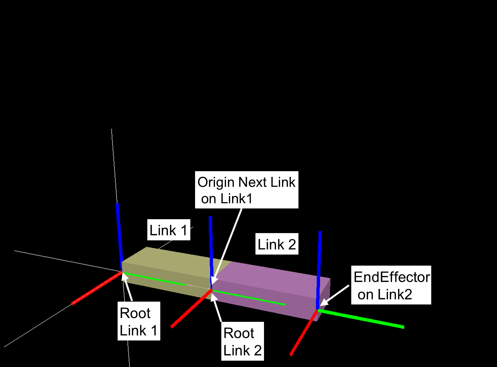

座標系の説明
座標変換
3次元の位置
3次元の位置は小文字の太字を用いて表される、実数3つのベクトルである。
3つの要素はそれぞれ、x軸、y軸、z軸の軸上の位置を表す。
縦ベクトルとして表すことが多い。
3次元の位置 \(\mathbf{p}\) は以下のように定義されている。

3次元の回転
3次元の回転は、回転行列を用いて表すことができる。
回転行列は3x3の行列で、基準座標系から見た回転された座標系列の x軸、y軸、z軸を列方向に並べたものである。
回転行列 \(\mathbf{R}\) は以下のように定義されている。

この行列は直交行列となっており、以下の行列の転置 と 逆行列 が同値となる。
回転行列の逆行列は以下のように定義される。
3次元の回転の表し方としては、他に、 ロール・ピッチ・ヨー角(RPY)、単位クォータニオン(quaternion)、軸回り回転(AngleAxis)、等がある。
情報量としては3であるが、計算に使いやすい回転行列や、特異点がなく補間が容易なクォータニオンが使われる。
参考書を参照いただきたい。
軸回り回転(AngleAxis)
同時変換行列
3次元での姿勢は、3次元位置と3次元回転を用いて表すことができ、 位置の3自由度と回転の3自由度で6自由度となっている。
3次元での6自由度を表現するために同時変換行列を用いる。
3次元での姿勢を表すのに、同次変換行列 T を用いる。 T は 3次元位置ベクトル \(\mathbf{p}\) と 3次元回転行列 :\(\mathbf{R}\) を用いて、以下のように4x4行列として表される。

T の逆行列は以下のようになる。
T の掛け算は、\(\mathbf{T}_{a}\) と \(\mathbf{T}_{b}\) を添え字として以下のようになる。
\(\mathbf{T}_{a}\) と \(\mathbf{T}_{b}\) は、以下のように表される。
座標系

剛体リンクの座標系


座標系とcoordinatesクラスの関係
coordinatesクラス (cnoid.IRSLCoords.coordinates) は、 同次変換行列の操作を行うためのクラスである。
coordinatesクラスのインスタンスは、 3次元位置ベクトル \(\mathbf{p}\) と 3次元回転行列 \(\mathbf{R}\) を持つ。
初期化と回転行列と３次元位置の取り出し
coordinates のプロパティとして、 以下のように \(\mathbf{p}\) と \(\mathbf{R}\) を取り出せる。
以下、Tはcoordinateクラスのインスタンスである。
Tの数学的な表現は以下の通り。
coordinatesクラスの初期化
>>> p = numpy.array([1, 2, 3])
>>> R = numpy.array([[0, -1, 0],[1, 0, 0], [0, 0, 1]])
>>> T = coordinates(v, R)
>>> T
<coordinates[address] 1 2 3 / 0 0 0.707107 0.707107 >
>>> coordinates(p) ### set pos, rot is Identity
>>> coordinates(R) ### set rot, pos is Zero
>>> coordinates(numpy.array([0, 0, 0, 1])) ### set rot by quaternion
>>> coordinates(v, numpy.array([0, 0, 0, 1])) ### set pos and rot by quaternion
>>> coordinates(numpy.array([[0, -1, 0, 0],[1, 0, 0, 0], [0, 0, 1, 0], [0, 0, 0, 1]]) ### 4x4 homogeneous transformation matrix
3次元位置のゲットとセット(attribute pos へのアクセス)
>>> T.pos
array([1., 2., 3.])
回転行列のゲットとセット(attribute rot へのアクセス)
>>> T.rot
array([[ 0., -1., 0.],
[ 1., 0., 0.],
[ 0., 0., 1.]])
クオータニオンのゲットとセット
>>> T.quaternion
array([0. , 0. , 0.70710678, 0.70710678])
RPY角度のゲットとセット
>>> T.RPY
array([ 0. , -0. , 1.57079633])
軸回り回転(AngleAxis)のゲットとセット
>>> T.angleAxis
array([0. , 0. , 1. , 1.57079633])
4x4同時変換行列のゲットとセット
>>> T.cnoidPosition
array([[ 0., -1., 0., 1.],
[ 1., 0., 0., 2.],
[ 0., 0., 1., 3.],
[ 0., 0., 0., 1.]])
ベクトルを変換するメソッド
以下、 \(\mathbf{v}\) は3次元ベクトル (numpy.array) である。以下の4つの関数は入力オブジェクトの値を変更しない。
ベクトルを回転させる
>>> v = numpy.array([0.1, 0.2, 0.3])
>>> T.rotate_vector(v)
array([-0.2, 0.1, 0.3])
返り値の数学的表現は
\(\mathbf{R} \mathbf{v}\)
ベクトルを回転させる（逆回転）
>>> T.inverse_rotate_vector(v)
返り値の数学的表現は
\(\mathbf{v}^T \mathbf{R}\)
ベクトルを変換する
ローカル座標系Tで表現されたベクトルのワールド座標系への変換
>>> T.transform_vector(v)
返り値の数学的表現は
\(\mathbf{R}\mathbf{v} + \mathbf{p}\)
ベクトルを変換する（逆変換）
ワールド座標系で表現されたベクトルのローカル座標系Tへの変換
>>> T.inverse_transform_vector(v)
返り値の数学的表現は
\(\mathbf{R}^{-1}\left( \mathbf{v} - \mathbf{p} \right)\)
ベクトルを変換するメソッド（入力オブジェクトの値を変える）
これらの関数は入力オブジェクトの値を変更する。
入力オブジェクトの値は返り値と同じ値になる。
>>> v = numpy.array([0.1, 0.2, 0.3])
>>> T.rotateVector(v)
>>> T.inverseRotateVector(v)
>>> T.transformVector(v)
>>> T.inverseTransformVector(v)
座標系を変更するメソッド
以下で、A は、coordinatesクラスのインスタンスである。
逆変換を表す変換を得る
>>> T.inverse_transformation()
逆変換を返す
返り値の数学的表現は以下の通り。
2つの座標間の変換を得る
>>> T.transformation(A, wrt)
wrt は座標系を表す引数である。デフォルト値は 'local' である。
wrt が coordinates.wrt.local の時は
\(T^{-1}A\) が返る。
wrt が coordinates.wrt.world の時は
\(AT^{-1}\) が返る。
wrt が W (coordinates class) の時は
\(W^{-1}AT^{-1}W\) が返る。
自身のインスタンスの値を変更するメソッド
以下で、 \(\leftarrow\) は代入を表す。
新しい変換の代入
>>> T.newcoords(A)
attributes pos と rot に値が代入される。
\(T \leftarrow A\)
座標系への移動
>>> T.move_to(A, wrt)
wrt が coordinates.wrt.local の時は
\(T \leftarrow TA\)
wrt が coordinates.wrt.world の時は
\(T \leftarrow A\)
wrt が W (coordinates class) の時は
\(T \leftarrow WA\)
平行移動
>>> T.translate(v, wrt)
wrt が coordinates.wrt.local の時は
\(\mathbf{p} \leftarrow \mathbf{p} + \mathbf{R}\mathbf{v}\)
wrt が coordinates.wrt.world の時は
\(\mathbf{p} \leftarrow \mathbf{p}+ \mathbf{v}\)
wrt が W (coordinates class) の時は
\(\mathbf{p} \leftarrow \mathbf{p} + \mathbf{R}_{W}\mathbf{v}\)
\(\mathbf{R}_{W}\) は W の回転行列
3次元位置への配置
>>> T.locate(v, wrt)
wrt が coordinates.wrt.local の時は
\(\mathbf{p} \leftarrow \mathbf{p} + \mathbf{R} \mathbf{v}\)
wrt が coordinates.wrt.world の時は
\(\mathbf{p} \leftarrow \mathbf{v}\)
wrt が W (coordinates class) の時は
\(\mathbf{p} \leftarrow \mathbf{p}_{W} + \mathbf{R}_{W} \mathbf{v}\)
\(\mathbf{R}_{W}\) は Wの回転行列、\(\mathbf{p}_{W}\) は Wの3次元位置。
変換を適用する
>>> T.transform(A, wrt)
wrt が coordinates.wrt.local の時は
\(T \leftarrow TA\)
wrt が coordinates.wrt.world の時は
\(T \leftarrow AT\)
wrt が W (coordinates class) の時は
\(T \leftarrow \left( W A W^{-1} \right) T\)
Examples
参考文献
実践ロボット制御 https://www.ohmsha.co.jp/book/9784274224300/
第2章 姿勢の記述 及び 第4章 運動学の一般的表現 の内容が参考になる